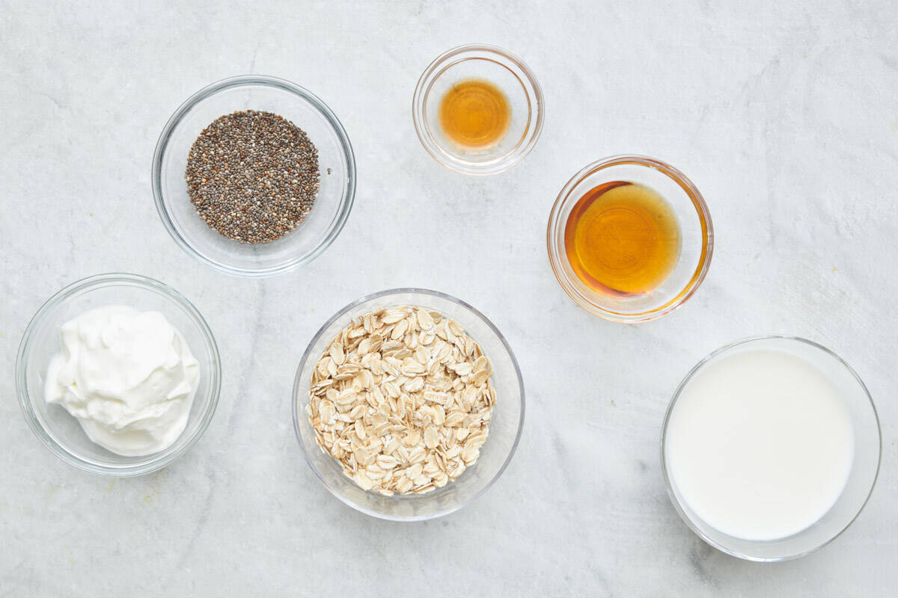

Recipe App
Home

BASE INGREDIENTS YOU NEED TO MAKE OVERNIGHT OATS
- 40g Oats
- 1 Cup Milk
- 10g Chia seeds (optional)
- 1/2 Cup Greek or vegan yogurt (optional)
- 1 drop Vanilla extract (optional)
- Sweetener (optional)
- Toppings

HOW TO MAKE A BASIC OVERNIGHT OATS RECIPE
- Gather all ingredients.
-
Combine milk, yogurt, oats, honey, and chia seeds in a 1/2-pint jar
with a lid; cover and shake until combined.
- Fold in toppins.
- Cover and refrigerate, 8 hours to overnight. Enjoy!